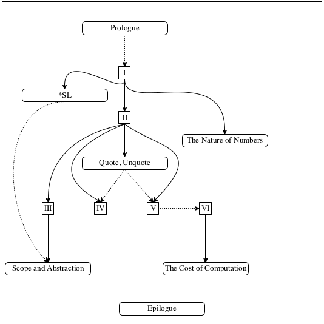

前言
许多职业需要某种形式的编程。会计对电子表格编程；音乐家对合成器编程；作家对字处理软件编程；网站设计人员对样式表编程。
当我们为本书的第一版写下这些文字时(1995–2000)，读者们也许还认为它是遥不可及的；到目前为止，编程已经成为了一个必备技能，大量的出版物—
典型的编程课教一种“修补，直到它工作”的方法。当它工作的时候，学生惊呼“它工作了！” 然后，继续下一个。可悲的是，这句话也是计算中最短的谎言，它花费了许多人很多小时的生命。 相反，本书着重于针对专业和职业程序员的良好编程习惯。
通过“良好的编程”，我们指的是创建软件的方法，它从一开始，在每个阶段和每一步都依赖于系统的思想，规划和理解。 为了强调这一点，我们提到系统的程序设计和系统性地设计的程序。 需要指出的是，后者阐述了所需功能的理论说明。良好的程序也满足审美。 一个良好的程序的优雅可以和经历时间考验的诗词或者旧时代的黑白照片相媲美。 简而言之，编程和良好的编程的区别，就像餐馆里的蜡笔素描和博物馆里的油画的区别。
每个人能设计程序
每个人能够体验到来自创造性的设计的满足感。
在文科教育中 程序设计—
而非编程 — 应该是和数学与语言技能一样的角色。
系统化的程序设计
在我们谈到服务端和客户端组件，这种情况时，一个程序和称为用户的人以及其他程序进行交互。 因此，有意义的完整的程序包含许多构建组件，一些处理输入，一些创造输出，而另一些则要弥补这两者之间的鸿沟。 我们选择使用函数作为基础性的构建组件，因为每个人在初等代数中都会遇到函数，而且最简单的程序也仅仅是这样的函数。 关键是发现哪些函数是需要的，怎么连接他们，以及怎么从基本的要素中构建他们。
在本书中，“系统性的程序设计”是两个原则的复合体：设计方法和迭代改进。We drew inspiration from Michael Jackson’s method for creating COBOL programs plus conversations with Daniel Friedman on recursion, Robert Harper on type theory, and Daniel Jackson on software design. The design recipes are a creation of the authors, and here they enable the use of the latter.
从问题分析到数据定义
确定必须被呈现的信息以及它在所选择的编程语言中是怎样呈现的。制定数据定义，使用例子演示它们。
签名， 目的， 状态, 头部
声明所期望的函数消费和生产的数据类型。给这个问题-该函数计算什么，一个简洁的答案。 定义一段满足签名的桩代码(译者注)。
功能性的示例
逐步验证通过说明函数目的的例子。
函数模板
把数据定义翻译成函数的一个概要。
函数定义
填充函数模板的逻辑空白。利用目的声明和例子。
测试
将这些例子作为测试，并确保该函数全部通过。 这样做会发现错误。测试也可以补充一些例子，这些例子可以帮助其他人阅读和理解定义—
当这种需要出现的时候，而对于任何严肃的程序，它都会出现。
设计方法 应用在完整的程序和独立的函数。 这本书只处理两类完整的程序:一类是有图形用户接口的程序，一类是批处理程序。 相比之下，函数的设计方法，则来自多种多样的需要: 用于原子形式的数据，例如数字; 用于不同类型的数据的枚举;用于以固定方法合成其他数据的数据;用于有限的但是任意量的大数据;等等。
The function-level design recipes share a common design process. Figure 1 displays its six essential steps. The title of each step specifies the expected outcome(s); the “commands” suggest the key activities. Examples play a central role at almost every stage.Instructors Have students copy figure 1 on one side of an index card. When students are stuck, ask them to produce their card and point them to the step where they are stuck. For the chosen data representation in step 1, writing down examples proves how real-world information is encoded as data and how data is interpreted as information. Step 3 says that a problem-solver must work through concrete scenarios to gain an understanding of what the desired function is expected to compute for specific examples. This understanding is exploited in step 5, when it is time to define the function. Finally, step 6 demands that examples are turned into automated test code, which ensures that the function works properly for some cases. Running the function on real-world data may reveal other discrepancies between expectations and results.
Each step of the design process comes with pointed questions. For
certain steps—
The novelty of this approach is the creation of intermediate products for beginner-level programs. When a novice is stuck, an expert or an instructor can inspect the existing intermediate products. The inspection is likely to use the generic questions from the design process and thus drive the novice to correct himself or herself. And this self-empowering process is the key difference between programming and program design.
Iterative Refinement addresses the issue that problems are complex and multifaceted. Getting everything right at once is nearly impossible. Instead, computer scientists borrow iterative refinement from the physical sciences to tackle this design problem. In essence, iterative refinement recommends stripping away all inessential details at first and finding a solution for the remaining core problem. A refinement step adds in one of these omitted details and re-solves the expanded problem, using the existing solution as much as possible. A repetition, also called an iteration, of these refinement steps eventually leads to a complete solution.
In this sense, a programmer is a miniscientist. Scientists create approximate models for some idealized version of the world to make predictions about it. As long as the model’s predictions come true, everything is fine; when the predicted events differ from the actual ones, scientists revise their models to reduce the discrepancy. In a similar vein, when programmers are given a task, they create a first design, turn it into code, evaluate it with actual users, and iteratively refine the design until the program’s behavior closely matches the desired product.
This book introduces iterative refinement in two different ways.
Since designing via refinement becomes useful even when the design
of programs becomes complex, the book introduces the technique
explicitly in the fourth part, once the problems acquire a certain
degree of difficulty. Furthermore, we use iterative refinement to
state increasingly complex variants of the same problem over the
course of the first three parts of the book. That is, we pick a core
problem, deal with it in one chapter, and then pose a similar
problem in a subsequent chapter—
DrRacket and the Teaching Languages
Learning to design programs calls for repeated hands-on practice. Just as nobody becomes a piano player without playing the piano, nobody becomes a program designer without creating actual programs and getting them to work properly. Hence, our book comes with a modicum of software support: a language in which to write down programs and a program development environment with which programs are edited like word documents and with which readers can run programs.
Many people we encounter tell us they wish they knew how to code and then ask which programming language they should learn. Given the press that some programming languages get, this question is not surprising. But it is also wholly inappropriate.Instructors For courses not aimed at beginners, it may be possible to use an off-the-shelf language with the design recipes. Learning to program in a currently fashionable programming language often sets up students for eventual failure. Fashion in this world is extremely short lived. A typical “quick programming in X” book or course fails to teach principles that transfer to the next fashion language. Worse, the language itself often distracts from the acquisition of transferable skills, at the level of both expressing solutions and dealing with programming mistakes.
In contrast, learning to design programs is primarily about the study of principles and the acquisition of transferable skills. The ideal programming language must support these two goals, but no off-the-shelf industrial language does so. The crucial problem is that beginners make mistakes before they know much of the language, yet programming languages always diagnose these errors as if the programmer already knew the whole language. As a result, diagnosis reports often stump beginners.
Our solution is to start with our own tailor-made teaching language, dubbed “Beginning Student Language” or BSL. The language is essentially the “foreign” language that students acquire in pre-algebra courses. It includes notation for function definitions, function applications, and conditional expressions. Also, expressions can beInstructors You may wish to explain that BSL is pre-algebra with additional forms of data and a host of pre-defined functions on those. nested. This language is thus so small that an error diagnosis in terms of the whole language is still accessible to readers with nothing but pre-algebra under their belt.
A student who has mastered the structural design principles can then move on to “Intermediate Student Language” and other advanced dialects, collectively dubbed *SL. The book uses these dialects to teach design principles of abstraction and general recursion. We firmly believe that using such a series of teaching languages provides readers with a superior preparation for creating programs for the wide spectrum of professional programming languages (JavaScript, Python, Ruby, Java, and others).
Note The teaching languages are implemented in Racket, a programming language we built for building programming languages. Racket has escaped from the lab into the real world, and it is a programming vehicle of choice in a variety of settings, from gaming to the control of telescope arrays. Although the teaching languages borrow elements from the Racket language, this book does not teach Racket. Then again, a student who has completed this book can easily move on to Racket. End
When it comes to programming environments, we face an equally bad choice as the one for languages. A programming environment for professionals is analogous to the cockpit of a jumbo jet. It has numerous controls and displays, overwhelming anyone who first launches such a software application. Novice programmers need the equivalent of a two-seat, single-engine propeller aircraft with which they can practice basic skills. We have therefore created DrRacket, a programming environment for novices.
DrRacket supports highly playful, feedback-oriented learning with just two simple interactive panes: a definitions area, which contains function definitions, and an interactions area, which allows a programmer to ask for the evaluation of expressions that may refer to the definitions. In this context, it is as easy to explore “what if” scenarios as in a spreadsheet application. Experimentation can start on first contact, using conventional calculator-style examples and quickly proceeding to calculations with images, words, and other forms of data.
An interactive program development environment such as DrRacket simplifies the learning process in two ways. First, it enables novice programmers to manipulate data directly. Because no facilities for reading input information from files or devices are needed, novices don’t need to spend valuable time on figuring out how these work. Second, the arrangement strictly separates data and data manipulation from input and output of information from the “real world.” Nowadays this separation is considered so fundamental to the systematic design of software that it has its own name: model-view-controller architecture. By working in DrRacket, new programmers are exposed to this fundamental software engineering idea in a natural way from the get-go.
Skills that Transfer
The skills acquired from learning to design programs systematically transfer in two directions. Naturally, they apply to programming in general as well as to programming spreadsheets, synthesizers, style sheets, and even word processors. Our observations suggest that the design process from figure 1 carries over to almost any programming language, and it works for 10-line programs as well as for 10,000-line programs. It takes some reflection to adopt the design process across the spectrum of languages and scale of programming problems; but once the process becomes second nature, its use pays off in many ways.
Learning to design programs also means acquiring two kinds of universally useful skills. Program design certainly teaches the same analytical skills as mathematics, especially (pre)algebra and geometry. But, unlike mathematics, working with programs is an active approach to learning. Creating software provides immediate feedback and thus leads to exploration, experimentation, and self-evaluation. The results tend to be interactive products, an approach that vastly increases the sense of accomplishment when compared to drill exercises in textbooks.
In addition to enhancing a student’s mathematical skills, program design teaches analytical reading and writing skills. Even the smallest design tasks are formulated as word problems. Without solid reading and comprehension skills, it is impossible to design programs that solve a reasonably complex problem. Conversely, program design methods force a creator to articulate his or her thoughts in proper and precise language. Indeed, if students truly absorb the design recipe, they enhance their articulation skills more than anything else.
analyze a problem statement, typically stated as a word problem;
extract and express its essence, abstractly;
illustrate the essence with examples;
make outlines and plans based on this analysis;
evaluate results with respect to expected outcomes; and
revise the product in light of failed checks and tests.
Each step requires analysis, precision, description, focus, and
attention to details. Any experienced entrepreneur, engineer,
journalist, lawyer, scientist, or any other professional can explain
how many of these skills are necessary for his or her daily work.
Practicing program design—
Similarly, refining designs is not restricted to computer science and program creation. Architects, composers, writers, and other professionals do it, too. They start with ideas in their head and somehow articulate their essence. They refine these ideas on paper until their product reflects their mental image as much as possible. As they bring their ideas to paper, they employ skills analogous to fully absorbed design recipes: drawing, writing, or piano playing to express certain style elements of a building, describe a person’s character, or formulate portions of a melody. What makes them productive with an iterative development process is that they have absorbed their basic design recipes and learned how to choose which one to use for the current situation.
This Book and Its Parts
The purpose of this book is to introduce readers without prior
experience to the systematic
design of programs. In tandem, it presents a symbolic view of computation, a
method that explains how the application of a program to data works.
Roughly speaking, this method generalizes what students learn in
elementary school arithmetic and middle school algebra. But have no
fear. DrRacket comes with a mechanism—
The book consists of six parts separated by five intermezzos and is bookended by a Prologue and an Epilogue. While the major parts focus on program design, the intermezzos introduce supplementary concepts concerning programming mechanics and computing.
固定大小的数据 explains the most fundamental concepts of systematic design using simple examples. The central idea is that designers typically have a rough idea of what data the program is supposed to consume and produce. A systematic approach to design must therefore extract as many hints as possible from the description of the data that flows into and out of a program. To keep things simple, this part starts with atomic data—
numbers, images, and so on— and then gradually introduces new ways of describing data: intervals, enumerations, itemizations, structures, and combinations of these. Intermezzo 1: Beginning Student Language describes the teaching language in complete detail: its vocabulary, its grammar, and its meaning. Computer scientists refer to these as syntax and semantics. Program designers use this model of computation to predict what their creations compute when run or to analyze error diagnostics.
Arbitrarily Large Data extends Fixed-Size Data with the means to describe the most interesting and useful forms of data: arbitrarily large compound data. While a programmer may nest the kinds of data from 固定大小的数据 to represent information, the nesting is always of a fixed depth and breadth. This part shows how a subtle generalization gets us from there to data of arbitrary size. The focus then switches to the systematic design of programs that process this kind of data.
Intermezzo 2: Quote, Unquote introduces a concise and powerful notation for writing down large pieces of data: quotation and anti-quotation.
抽象 acknowledges that many of the functions from 任意量的大数据 look alike. No programming language should force programmers to create pieces of code that are so similar to each other. Conversely, every good programming language comes with ways to eliminate such similarities. Computer scientists call both the step of eliminating similarities and its result abstraction, and they know that abstractions greatly increase a programmer’s productivity. Hence, this part introduces design recipes for creating and using abstractions.
Intermezzo 3: Scope and 抽象 plays two roles. On the one hand, it injects the concept of lexical scope, the idea that a programming language ties every occurrence of a name to a definition that a programmer can find with an inspection of the code. On the other hand, it explains a library with additional mechanisms for abstraction, including so-called for loops.
交织的数据 generalizes Arbitrarily Large Data and explicitly introduces the idea of iterative refinement into the catalog of design concepts.
Intermezzo 4: The Nature of Numbers explains and illustrates why decimal numbers work in such strange ways in all programming languages. Every budding programmer ought to know these basic facts.
生成递归 adds a new design principle. While structural design and abstraction suffice for most problems that programmers encounter, they occasionally lead to insufficiently “performant” programs. That is, structurally designed programs might need too much time or energy to compute the desired answers. Computer scientists therefore replace structurally designed programs with programs that benefit from ad hoc insights into the problem domain. This part of the book shows how to design a large class of just such programs.
Intermezzo 5: The Cost of Computation uses examples from 生成递归 to illustrate how computer scientists think about performance.
累计 adds one final trick to the toolbox of designers: accumulators. Roughly speaking, an accumulator adds “memory” to a function. The addition of memory greatly improves the performance of structurally designed functions from the first four parts of the book. For the ad hoc programs from 生成递归, accumulators can make the difference between finding an answer and never finding one.

Independent readers ought to work through the entire book, from the first page to the last. We say “work” because we really mean that a reader ought to solve all exercises or at least know how to solve them.
Similarly, instructors ought to cover as many elements as possible, starting from the Prologue all the way through the Epilogue. Our teaching experience suggests that this is doable. Typically, we organize our courses so that our readers create a sizable and entertaining program over the course of the semester. We understand, however, that some circumstances call for significant cuts and that some instructors’ tastes call for slightly different ways to use the book.
Figure 2 is a navigation chart for those who wish to pick and choose from the elements of the book. The figure is a dependency graph. A solid arrow from one element to another suggests a mandatory ordering; for example, Part II requires an understanding of Part I. In contrast, a dotted arrow is mostly a suggestion; for example, understanding the Prologue is unnecessary to get through the rest of the book.
A high school instructor may want to cover (as much as possible of) parts I and II, including a small project such as a game.
A college instructor in a quarter system may wish to focus on 固定大小的数据, 任意量的大数据, 抽象, and 生成递归, plus the intermezzos on *SL and scope.
A college instructor in a semester system may prefer to discuss performance trade-offs in designs as early as possible. In this case, it is best to cover Fixed-Size Data and Arbitrarily Large Data and then the accumulator material from 累计 that does not depend on Generative Recursion. At that point, it is possible to discuss Intermezzo 5: The Cost of Computation and to study the rest of the book from this angle.
Iteration of Sample Topics The book revisits certain exercise and sample topics time and again. For example, virtual pets are found all over 固定大小的数据 and even show up in 任意量的大数据. Similarly, both Fixed-Size Data and Arbitrarily Large Data cover alternative approaches to implementing an interactive text editor. Graphs appear in 生成递归 and immediately again in 累计. The purpose of these iterations is to motivate iterative refinement and to introduce it through the backdoor. We urge instructors to assign these themed sequences of exercises or to create their own such sequences.
The Differences
It explicitly acknowledges the difference between designing a whole program and the functions that make up a program. Specifically, this edition focuses on two kinds of programs: event-driven (mostly GUI, but also networking) programs and batch programs.
The design of a program proceeds in a top-down planning phase followed by a bottom-up construction phase. We explicitly show how the interface to libraries dictates the shape of certain program elements. In particular, the very first phase of a program design yields a wish list of functions. While the concept of a wish list exists in the first edition, this second edition treats it as an explicit design element.
Fulfilling an entry from the wish list relies on the function design recipe, which is the subject of the six major parts.
A key element of structural design is the definition of functions that compose others. This design-by-composition is especially useful for the world of batch programs. Like generative recursion,We thank Kathi Fisler for calling our attention to this point. it requires a eureka!, specifically a recognition that the creation of intermediate data by one function and processing this intermediate result by a second function simplifies the overall design. This approach also needs a wish list, but formulating these wishes calls for an insightful development of an intermediate data definition. This edition of the book weaves in a number of explicit exercises on design by composition.
While testing has always been a part of our design philosophy, the teaching languages and DrRacket started supporting it properly only in 2002, just after we had released the first edition. This new edition heavily relies on this testing support.
This edition of the book drops the design of imperative programs. The old chapters remain available on-line. An adaptation of this material will appear in the second volume of this series, How to Design Components.
The book’s examples and exercises employ new teachpacks. The preferred style is to link in these libraries via require, but it is still possible to add teachpacks via a menu in DrRacket.
- Finally, this second edition differs from the first in a few aspects of terminology and notation:The last three differences greatly improve quotation for lists.
Acknowledgments from the First Edition
Four people deserve special thanks: Robert “Corky” Cartwright, who co-developed a predecessor of Rice University’s introductory course with the first author; Daniel P. Friedman, for asking the first author to rewrite The Little LISPer (also MIT Press) in 1984, because it started this project; John Clements, who designed, implemented, and maintains DrRacket’s stepper; and Paul Steckler, who faithfully supported the team with contributions to our suite of programming tools.
The development of the book benefited from many other friends and colleagues who used it in courses and/or gave detailed comments on early drafts. We are grateful to them for their help and patience: Ian Barland, John Clements, Bruce Duba, Mike Ernst, Kathi Fisler, Daniel P. Friedman, John Greiner, Géraldine Morin, John Stone, and Valdemar Tamez.
A dozen generations of Comp 210 students at Rice used early drafts of the text and contributed improvements in various ways. In addition, numerous attendees of our TeachScheme! workshops used early drafts in their classrooms. Many sent in comments and suggestions. As representative of these we mention the following active contributors: Ms. Barbara Adler, Dr. Stephen Bloch, Ms. Karen Buras, Mr. Jack Clay, Dr. Richard Clemens, Mr. Kyle Gillette, Mr. Marvin Hernandez, Mr. Michael Hunt, Ms. Karen North, Mr. Jamie Raymond, and Mr. Robert Reid. Christopher Felleisen patiently worked through the first few parts of the book with his father and provided direct insight into the views of a young student. Hrvoje Blazevic (sailing, at the time, as Master of the LPG/C Harriette), Joe Zachary (University of Utah), and Daniel P. Friedman (Indiana University) discovered numerous typos in the first printing, which we have now fixed. Thank you to everyone.
Finally, Matthias expresses his gratitude to Helga for her many years of patience and for creating a home for an absent-minded husband and father. Robby is grateful to Hsing-Huei Huang for her support and encouragement; without her, he would not have gotten anything done. Matthew thanks Wen Yuan for her constant support and enduring music. Shriram is indebted to Kathi Fisler for support, patience and puns, and for her participation in this project.
Acknowledgments
As in 2001, we are grateful to John Clements for designing, validating, implementing, and maintaining DrRacket’s algebraic stepper. He has done so for nearly 20 years now, and the stepper has become an indispensable tool of explanation and instruction.
Over the past few years, several colleagues have commented on the various drafts and suggested improvements. We gratefully acknowledge the thoughtful conversations and exchanges with these individuals:
Kathi Fisler (WPI and Brown University), Gregor Kiczales (University of British Columbia), Prabhakar Ragde (University of Waterloo), and Norman Ramsey (Tufts University).
Guillaume Marceau, working with Kathi Fisler and Shriram, spent many months studying and improving the error messages in DrRacket. We are grateful for his amazing work.
Celeste Hollenbeck is the most amazing reader ever. She never tired of pushing back until she understood the prose. She never stopped until a section supported its thesis, its organization matched, and its sentences connected. Thank you very much for your incredible efforts.
We also thank the following: Ennas Abdussalam, Mark Aldrich, Anisa Anuar, Saad Bashir, Aaron Bauman, Suzanne Becker, Steven Belknap, Stephen Bloch, Elijah Botkin, Joseph Bogart William Brown, Tomas Cabrera, Xuyuqun C, Colin Caine, Anthony Carrico, Rodolfo Carvalho, Estevo Castro, Maria Chacon, Stephen Chang, Tung Cheng, Nelson Chiu, Jack Clay, Richard Cleis, John Clements, Scott Crymble, Pierce Darragh, Jonas Decraecker, Qu Dongfang, Mark Engelberg, Andrew Fallows, Jiankun Fan Christopher Felleisen, Sebastian Felleisen, Vladimir Gajić, Xin Gao, Adrian German, Jack Gitelson, Kyle Gillette, Scott Greene, Ben Greenman, Ryan Golbeck, Josh Grams, Grigorios, Jane Griscti, Alberto Eleuterio Flores Guerrero, Tyler Hammond, Nan Halberg, Li Junsong, Nadeem Abdul Hamid, Jeremy Hanlon, Craig Holbrook, Connor Hetzler, Wayne Iba, John Jackaman, Jordan Johnson, Blake Johnson, Erwin Junge, Marc Kaufmann, Cole Kendrick, Gregor Kiczales, Eugene Kohlbecker, Caitlin Kramer, Roman Kunin Jackson Lawler, Devon LePage, Ben Lerner, Shicheng Li, Chen Lj, Ed Maphis, YuSheng Mei, Andres Meza, Saad Mhmood, Elena Machkasova, Jay Martin, Jay McCarthy, James McDonell, Mike McHugh, Wade McReynolds, David Moses, Ann E. Moskol, Scott Newson, Paul Ojanen, Prof. Robert Ordóñez, Laurent Orseau, Klaus Ostermann, Alanna Pasco, S. Pehlivanoglu, Eric Parker, Nick Pleatsikas, Prathyush Pramod, Alok Rai, Norman Ramsey, Krishnan Ravikumar, Jacob Rubin, Ilnar Salimzianov, Luis Sanjuán, Brian Schack, Ryan “Havvy” Scheel, Lisa Scheuing, Willi Schiegel, Vinit Shah, Nick Shelley, Edward Shen, Tubo Shi, Matthew Singer, Stephen Siegel, Milton Silva, Kartik Singhal, Joe Snikeris, Marc Smith, Matthijs Smith, Dave Smylie, Vincent St-Amour, Reed Stevens, Kevin Sullivan, Asumu Takikawa, Éric Tanter, Sam Tobin-Hochstadt, Thanos Tsouanas, Aaron Tsay, Mariska Twaalfhoven, Bor Gonzalez Usach, Manuel del Valle, David Van Horn, Nick Vaughn, Simeon Veldstra, Andre Venter, Jan Vitek, Marco Villotta, Mitch Wand, Yuxu (Ewen) Wang, Michael Wijaya, G. Clifford Williams, Ewan Whittaker-Walker, Julia Wlochowski, Roelof Wobben, Mardin Yadegar, Huang Yichao, Yuwang Yin, Andrew Zipperer for comments on drafts of this second edition.
The HTML layout at htdp.org is the work of Matthew Butterick, who created these styles for our on-line documentation.
Finally, we are grateful to Ada Brunstein and Marie Lufkin Lee, our editors at MIT Press, who gave us permission to develop this second edition of How to Design Programs on the web. We also thank MIT’s Christine Bridget Savage and John Hoey from Westchester Publishing Services for managing the final production process. Jennifer Robertson and Mark Woodworth did a wonderful job of copy editing the manuscript.